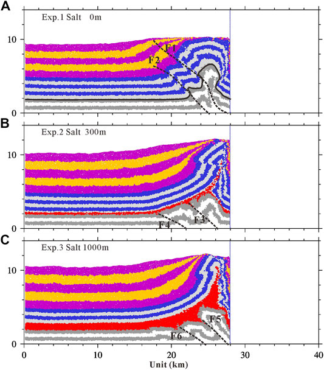
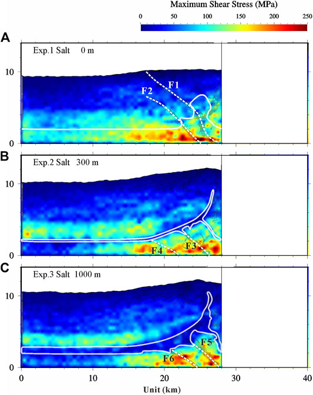

题目
Effects of Salt Thickness on the Structural Deformation of Foreland Fold-and-Thrust Belt in the Kuqa Depression, Tarim Basin: Insights From Discrete Element Models
作者
Changsheng Li1,2,3, Hongwei Yin3*, Zhenyun Wu1,2*, Peng Zhou4, Wei Wang3, Rong Ren5, Shuwei Guan5, Xiangyun Li6, Haoyu Luo6 and Dong Jia3
- State Key Laboratory of Nuclear Resources and Environment, East China University of Technology, Nanchang, China
- School of Earth Sciences, East China University of Technology, Nanchang, China
- School of Earth Sciences and Engineering, Nanjing University, Nanjing, China
- Resource Exploration Office, Tarim Oilfield Branch Company, PetroChina, Korla, China
- PetroChina Research Institute of Petroleum Exploration and Development, Beijing, China
- Research Institute of Petroleum Exploration and Development, Tarim Oilfield Branch Company, PetroChina, Korla, China
摘要
The salt layer is critical for the structural deformation in the salt-bearing fold-and-thrust system, which not only acts as the efficient décollement layer but also flows to form salt tectonics. Kuqa Depression has a well-preserved thin-skinned fold-and-thrust system with the salt layer as the décollement. To investigate the effects of salt thickness on the structural deformation in the Kuqa Depression, three discrete element models with different salt thicknesses were constructed. The experiment without salt was controlled by several basal décollement dominant faults, forming several imbricate sheets. The experiments with salt developed the decoupled deformation with the salt layer as the upper décollement (subsalt, intrasalt, and suprasalt), significantly similar to the Kuqa Depression along the northern margin of Tarim Basin. Basal décollement dominant imbricated thrusts formed at the subsalt units, while the monoclinal structure formed at the suprasalt units. The decoupled deformation was also observed in the tectonic deformation graphics, distortional strain fields, and max shear stress fields. However, the salt layer was thickened in the thick salt model, and the salt thickness of the thin salt model varied slightly because the thin salt weakened the flowability of the salt. The lower max shear stress zone was easily formed in the distribution region of salt under the action of compression stress, which is conducive to the flow convergence of salt and the crumpled deformation of interlayer in salt. The results are well consistent with the natural characteristics of structural deformation in the Kuqa Depression. Our modeling result concerns the structural characteristics and evolution of salt-related structures and the effects of salt thickness on the structural deformation in the compressional stress field, which might be helpful for the investigations of salt-related structures in other salt-bearing fold-and-thrust belts.

FIGURE 5. Final deformations of three shortening experiments with different salt thicknesses after 12 km of shortening. A) Reference experiment. B) Experiment with thin salt (ca. 300 m). C) Experiment with thick salt (ca. 1,000 m). White and gray denote the subsalt layer. Red denotes the salt layer. Blue and gray denote the prekinematic layer. Violet and yellow denote the synkinematic layer. Bonds of assigned strengths (Table 2) were introduced at all interparticle contacts, except the synkinematic layer (violet and yellow) and salt layer (red). Dashed lines denote faults. The figures of each step are included in the Supplementary Material.

FIGURE 7. Max shear stress illustrated after 12 km of shortening. A) Reference experiment. B) Experiment with thin salt (ca. 300 m). C) Experiment with thick salt (ca. 1,000 m). The final structure of each series is superimposed by plotting regions of high distortional strain (i.e., the absolute value is greater than 4.8 in Figure 6) in black. Dashed lines denote faults. The areas that are trapped by the white solid line denote the salt. The figures of max shear stress for each step are included in the Supplementary Material.
Acknowledgments
The authors would like to thank Julia K. Morgan and Thomas Fournier for generously sharing their postprocessing scripts and algorithms, which have been used to process and display the model outputs presented here. HY would like to thank Prof. Morgan for generously sharing her discrete element code RICEBAL (v. 5.1, modified from Peter Cundall’s TRUBAL v. 1.51) and Rice University for hosting his collaborative visit in 2009, providing him with the opportunity to further develop his knowledge of DEM and geomechanics principles and learn the capabilities of these methods. The authors also would like to thank Wenqiao XU for the fruitful discussions on this manuscript. The authors are grateful for thoughtful reviews by two reviewers, which resulted in significant improvements in this paper. The authors acknowledge Beijing PARATERA Tech CO., Ltd. (https://paratera.com) for providing HPC resources that have contributed to the research results reported within this paper. Data used in this paper and the discrete element software ZDEM will be available online at https://geovbox.com, and more examples are given on this website. Modeling results and information can be obtained by contacting CL at lichangsheng@ecut.edu.cn.
Supplementary Material
The Supplementary Material for this article can be found online at: https://www.frontiersin.org/articles/10.3389/feart.2021.655173/full#supplementary-material